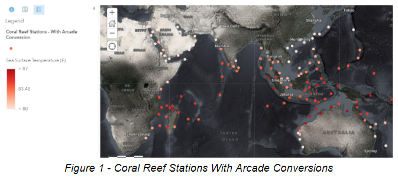
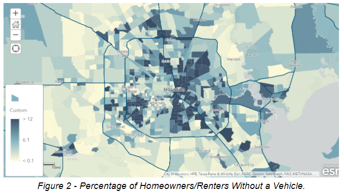
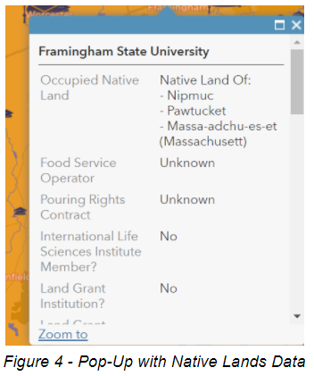

Ari Nicholson
Learning Arcade in AGOL
2.23.21
ArcGIS Arcade is Esri’s solution to more complex ArcGIS Online visualisations, interactions, and calculations. It is very similar in function to the calculation tool, however, it does not require that the user own or edit the data. With Arcade, users can customize pop-ups and change symbology of layers that are not hosted as a feature layer on your account, adding the ability to use data from the Living Atlas or other users. This is particularly helpful when data is automatically updated. Arcade’s interface is directly on the ArcGIS Online website, and includes many simple clickable features and tools - ideally making it accessible to users who are not well versed in code. That said, it is based off of Javascript and more complex coding is available in Arcade.
Some specific uses that I found compelling were the ability to turn all caps data into proper case in pop-ups, add custom icons that are able to maintain the correct size at different scales, create pop-ups with characteristics from multiple layers, edits null values to say something more appealing (such as not available), and conduct spatial calculations without using credits such as intersect (particularly useful when an organization only has an ArcGIS Online license, such as the one I am working with for my internship. All together, I think that Arcade provides opportunities to be more collaborative with data on ArcGIS Online and removes some hassle and expense from hosting feature layers to make one small change. It is not surprising that Esri would implement a solution that encourages more use of data from Esri platforms, but it does make it convenient.
In addition to reviewing many articles about how to implement arcade, I completed a few tutorials. The first utilized a Living Atlas layer of world Ocean Temperatures (to monitor coral bleaching). This layer is continuously updated in Celsius. The task was to write an Arcade script to convert each temperature to Fahrenheit, which would then populate the legend and pop-ups with Fahrenheit values. A small bit of code placed in a new attribute box under symbology achieves this: $feature.sst * 1.8 + 32.
I also completed a tutorial regarding the percentage of homeowners/renters without a vehicle in Houston, Texas. To create a percentage, I divided the number of homeowners/renters without a vehicle by the total number of homeowners/renters, then multiplied by 100. The code was: round(($feature["OwnerRenterHH_NoVehicle"]/$feature["OwnerRenter_HHs"]) *100,2).
I wanted to try out some Arcade in a map I am developing for my internship with Uprooted & Rising concerning universities and food justice. The map I am developing has pop-ups that show several attributes about food contracts and funding sources for every school in the US. Some of the attributes are in all upper case, so I used some simple code to make the pop-up descriptions in proper case rather than upper - Proper($feature.NAME).

I also was interested in how a spatial calculation like Intersects could benefit my map. I wanted to make an unwieldy and confusing layer of Native Lands show up in a more digestible format - in each university pop-up, describing what native lands each university is located on. I looked at a few tutorials, and ultimately used this post called Overlapping Features in Pop-Ups Quick Introduction to Using FeatureSets with Arcade linked from this stack exchange post to start my code. I reformatted it to say:
var intersectLayer =Intersects(FeatureSetByName($map,"Native Lands"), $feature)
for (var f in intersectLayer){
return f.NAME
}
However, I wanted the pop-up to show multiple native lands that overlap, not just the one on top. I looked through the comments to see if anyone had created code to do that, and user XanderBakker had contributed some in the comments. I updated the code to read as follows (note //is a note in the code):
var intersectLayer =Intersects(FeatureSetByName($map,"Native Lands"), $feature)
//Defines variable to intersect with College layer, feature from Native Lands
var names = "";
// creating a blank space variable
for (var f in intersectLayer){
if (names == "") {
names = "Native Land Of:" + TextFormatting.NewLine + " - " + f.NAME;
} else {
names += TextFormatting.NewLine + " - " + f.NAME;
}
}
// for loop - in var intersectlayer, if there is a blank space start the list with native land of:, new line, first name
// if there is not a blank space, add an additional line and name
return names;
// show these names in the pop-up

Finally, I briefly reviewed the content on the REST API. I was interested in reviewing it on the syllabus in hopes that it would help me pull in layers from additional sources besides AGOL, but in reality its use is to share sources from ArcGIS Online. Using and hosting an API is beyond my current coding abilities, but it was interesting to learn that there are ways to have other users request your data in real-time for other applications.
In conclusion, reviewing ArcGIS online Arcade gave me many ideas to pursue in my internship. In previous classes I learned to configure pop-ups, but I had no idea the degree of creative potential that is possible using Arcade and markup languages like HTML. I am excited to use Arcade to further develop pop-ups for my internship project - such as writing narrative to explain each attribute in the pop-up, and using Arcade to have it populate within the sentence. I would like to explore having these attributes show only when it’s value isn’t null, and add tables within the pop-up. This exploration allowed me to see the potential to create more professional, beautiful maps within ArcGIS Online.